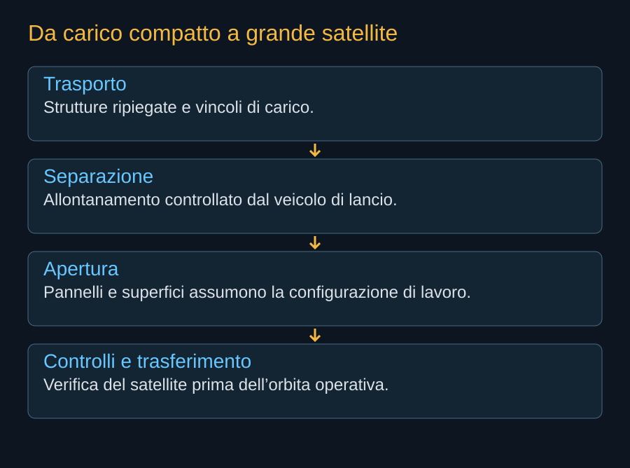

Un satellite con apertura dichiarata di 75 metri non entra nel razzo nella forma nella quale lavorerà. Deve trasformarsi. Durante il lancio le grandi superfici sono ripiegate e trattenute; dopo la separazione devono aprirsi, assumere una geometria utile e permettere al sistema di controllare il proprio movimento. Questa trasformazione è uno dei passaggi più delicati fra disegno e servizio.

Due veicoli nello stesso progetto
La configurazione compatta deve sopportare accelerazioni, vibrazioni e carichi acustici. Gli elementi devono restare fermi senza danneggiare superfici delicate o interfacce termiche. La configurazione dispiegata deve invece essere abbastanza leggera e stabile da sostenere raccolta solare, scambio termico e puntamento. Ottimizzare soltanto una delle due può rendere impraticabile l’altra.
Per grandi superfici esistono architetture arrotolabili, pieghevoli e segmentate. Le fotografie dell’installazione iROSA mostrano una tecnologia utilizzata sulla ISS, non il meccanismo AI1. SpaceX non ha pubblicato nel materiale qui verificato tutti i dettagli dei propri dispositivi. Lo schema del capitolo descrive quindi una sequenza funzionale, senza inventare cerniere o comandi specifici.


La microgravità non cancella l’inerzia
Una superficie grande mantiene massa e inerzia anche in orbita. Aprirla può cambiare il momento del veicolo; fermarla può eccitare oscillazioni. Il controllo deve conoscere questa evoluzione e mantenere condizioni compatibili con energia e comunicazioni. Non basta che il pannello riesca a uscire dal proprio alloggiamento.
Le deformazioni influenzano il puntamento. Un satellite può apparire fermo rispetto alle stelle mentre un terminale montato su una parte flessibile si muove. Sensori e controllo devono distinguere il comportamento del bus da quello delle appendici. Una prova a terra può simulare alcuni aspetti, ma deve compensare o rappresentare il peso che in orbita non agisce nello stesso modo.
I primi minuti e il primo collegamento
Dopo il rilascio il veicolo deve ottenere un assetto sicuro e abbastanza energia per completare i controlli. Deve identificarsi e collegarsi alla rete, o disporre di una sequenza autonoma capace di superare la fase iniziale. L’ordine delle operazioni dipende dal progetto. La comunicazione non può essere rimandata indefinitamente mentre un veicolo ancora poco conosciuto si allontana dal lanciatore.
La proposta SpaceX prevede controlli autonomi durante l’entrata in servizio e la possibilità di dismettere un satellite problematico prima di trasferirlo nell’orbita operativa. È un principio ragionevole di contenimento: scoprire problemi in una regione dalla quale l’uscita è più gestibile. La sua efficacia dipenderà dalla capacità residua del veicolo e dal tipo di guasto.
Apertura incompleta, missione parziale
Un pannello che non si dispiega completamente può ridurre la potenza o ostacolare un’altra funzione. Un radiatore incompleto può imporre di limitare il calcolo. Il satellite potrebbe mantenere abbastanza capacità per essere controllato e rientrare, senza poter offrire il servizio previsto. La distinzione fra satellite vivo e satellite commercialmente utile è importante.
Le prime missioni dovranno mostrare la ripetibilità della trasformazione. Una singola apertura riuscita sarà un passaggio reale; la flotta richiederà processi di produzione e collaudo che mantengano quel risultato su molti veicoli. L’industria nasce quando la grande struttura smette di essere soltanto un esemplare speciale.
Fonti pubbliche e tracce
- NASA, strutture e meccanismi dei piccoli satelliti. Riferimento generale per integrazione e strutture dispiegabili; non specifica i meccanismi Starmind.
- SpaceX, Starmind e scheda AI1. Consultata il 10 ottobre 2026. Fonte aziendale per la scheda corrente e gli obiettivi Gigasat; non rapporto di prove in volo.
- SpaceX, risposta alla FCC datata 16 settembre 2026. Documento primario scaricato e letto. Incontro del 14 settembre; inviluppi a pagina 8, rientro a pagina 9. Dichiarazioni e modelli del richiedente, non decisione della FCC.